P E P T I Q M X
GUÍA EDITORIAL · VOLUMEN I · 2026
Beyond Biology.
Hack your limits.
14 LÍNEAS RESEARCH-GRADE
VERIFICADAS POR JANOSHIK · ISO/IEC 17025
HPLC ≥ 99% · COA PÚBLICO POR LOTE
80+ REFERENCIAS PEER-REVIEWED
Material exclusivo para investigación de laboratorio · El uso es responsabilidad de quien lo aplique
I · CARTA DEL FUNDADOR
PÁG 02
Prefacio · Por qué existimos
Pureza que no se declara,
se verifica.
Empezamos PEPTIQ porque estábamos cansados de comprar péptidos que prometían 99% de pureza en su empaque y entregaban 87% en el cromatograma. Cansados de marcas mexicanas que vendían "research peptides" sin un solo COA público en su sitio. Cansados de pagar premium por commodities reetiquetados.
PEPTIQ es una marca editorial de péptidos research-grade construida sobre una sola obsesión: cada lote tiene su Certificado de Análisis publicado en peptiqmx.com antes de salir a venta. El laboratorio es Janoshik Analytical · Brno, República Checa, acreditado bajo ISO/IEC 17025 — el mismo que usan las marcas premium de Estados Unidos y Europa Occidental.
Esta guía es la documentación técnica de 14 líneas. No es una pieza de marketing — es el material que dimos primero a las clínicas de medicina estética, longevidad y rendimiento que nos pidieron entender, antes de comprar, qué es lo que estaban pidiendo a sus sujetos de investigación que se inyectaran.
Cada protocolo aquí descrito proviene de literatura peer-reviewed citada al final de cada capítulo. Cada dosis, cada frecuencia, cada duración de ciclo está construida sobre estudios clínicos públicos. Si una afirmación no tiene fuente verificable, no aparece en estas páginas.
Lee con calma. Marca lo que te interese. Cuando estés listo, escríbenos por WhatsApp y te mandamos el COA del lote que te interese — antes, no después, de tu compra.
— Equipo PEPTIQ Research
Fundador · PEPTIQ MX
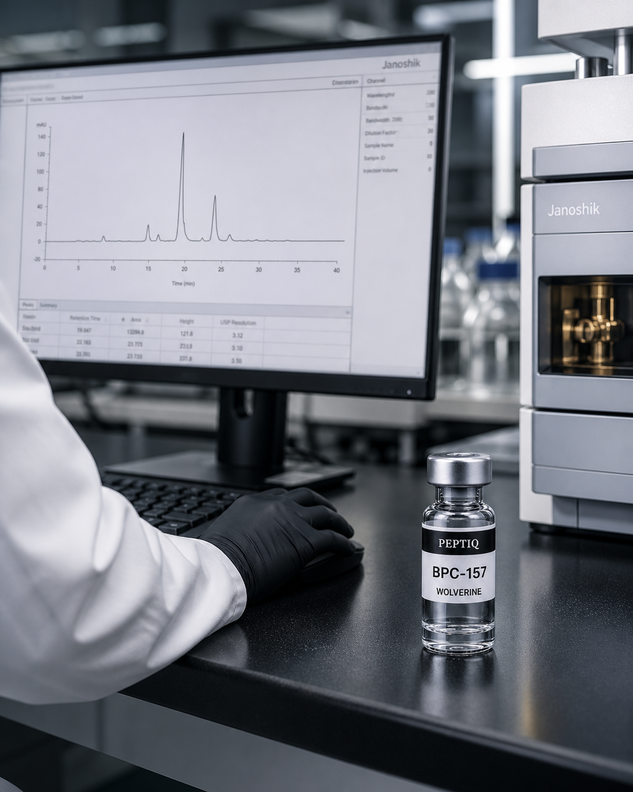
Janoshik Analytical · HPLC monitor · Brno (CZ)
La regla PEPTIQ
Si no se puede verificar, no entra al catálogo. Si HPLC muestra menos de 99% pureza, se rechaza el lote. Sin excepciones, sin negociación.
II · CÓMO LEER ESTA GUÍA
Cada línea
resuelve algo distinto.
Cada capítulo describe mecanismo celular, usos reportados en literatura, protocolo (dosis · frecuencia · vía · duración), stack clínico recomendado, observaciones de seguridad y bibliografía peer-reviewed. Cuatro filtros para encontrar tu línea.
01 · RECUPERACIÓN
Tendón · ligamento · mucosa
BPC-157 · TB-500 · Wolverine Stack · KPV. Para deportistas, post-cirugía, tendinitis crónica, intestino inflamado, rehabilitación ortopédica.
02 · GLOW
Piel · cabello · colágeno
GHK-Cu · GLOW Trinity · AHK-Cu. Anti-aging, post-procedimiento estético, alopecia incipiente, firmeza menopáusica, fotoenvejecimiento.
03 · PERFORMANCE
Composición · GH endógena
CJC-1295 + Ipamorelin · Tesamorelin. Hipertrofia, recovery, sueño profundo, recomposición ejecutiva, sarcopenia post-45.
04 · LONGEVIDAD
Mitocondria · telómeros
NAD+ · Epithalon · Highlander Stack. Energía celular, brain fog, fatiga 35+, ritmos circadianos, edad biológica epigenética.
05 · COMPOSICIÓN
Pérdida de peso · grasa visceral
Retatrutide · Semaglutide · Cagrilintide · Tesamorelin. Triple agonista GLP-1/GIP/Glucagón, NAFLD, obesidad metabólica.
06 · COGNICIÓN
Foco · BDNF · sueño
Semax · Cerebrolysin · Selank · Ipamorelin nocturno · Epithalon. Trabajo cognitivo prolongado, post-conmoción, restauración del sueño.
III · QUÉ SON LOS PÉPTIDOS
PÁG 04
Capítulo III · Fundamento celular
Cartas de instrucción
que tu cuerpo ya sabe leer.
Un péptido es una cadena de entre dos y cincuenta aminoácidos. Tu cuerpo fabrica miles cada día. Funcionan como mensajeros: una célula los libera, otra los recibe, el mensaje ejecuta una acción específica.
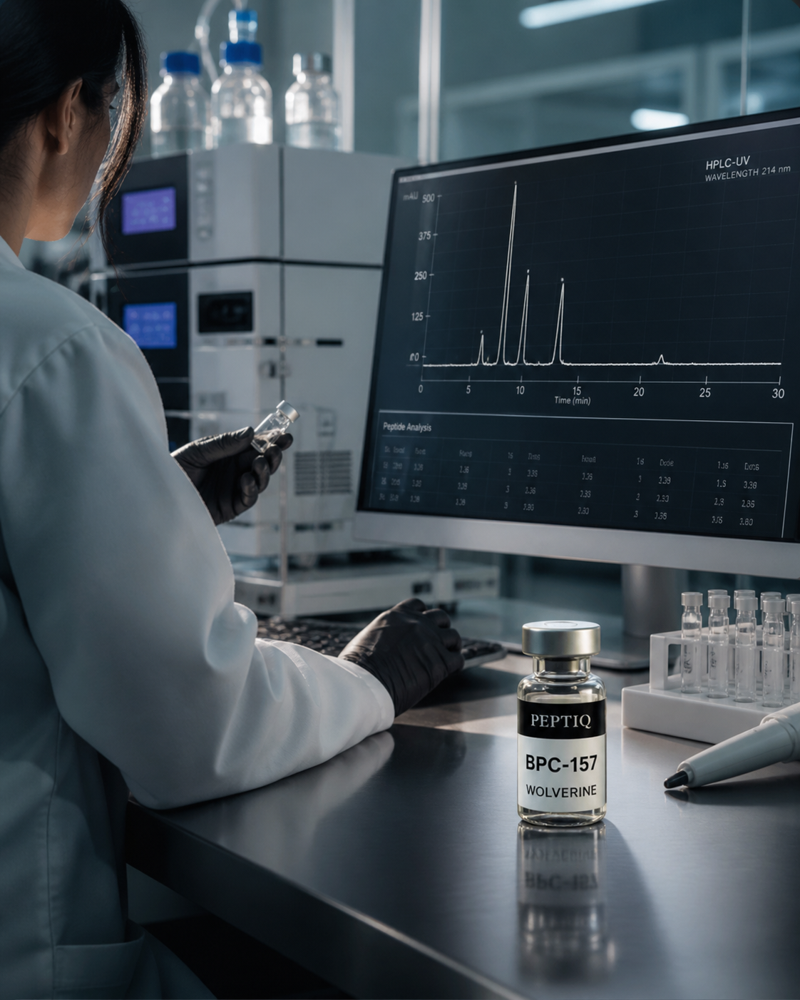
Cromatografía HPLC de un lote BPC-157 · pico único a 99.4% · Janoshik 2026
Mensajeros, no fármacos
A diferencia de un fármaco sintético, un péptido administrado de forma exógena amplifica una señal que tu cuerpo ya emite. No crea respuesta artificial: refuerza un canal endógeno que con la edad pierde volumen. La GH cae ~14% por década después de los 30; NAD+ muscular, ~50% entre los 20 y 60 (Verdin 2015); GHK-Cu cutáneo, 60–70% en el mismo rango.
Vías de administración
Subcutánea (SC) es el estándar para 80% de péptidos research-grade. Aguja 31G corta, 8 mm, abdomen/muslo/tríceps. Topical para GHK-Cu y AHK-Cu (serum 0.05–1%). Intranasal para neuropéptidos rusos (Semax, Selank) — ruta directa al SNC vía bulbo olfatorio. Oral entérico sólo para BPC-157 y KPV con cubierta resistente a pH gástrico.
Por qué la temperatura importa
Los péptidos son moléculas frágiles. La forma liofilizada (polvo seco) es estable durante meses a temperatura ambiente. Una vez reconstituida con agua bacteriostática, la solución es estable ~28 días refrigerada a 2–8 °C. Congelar fragmenta el enlace peptídico por cristalización; agitar violentamente rompe la estructura terciaria. Estas dos malas prácticas explican la mayoría de protocolos "que no funcionaron".
Cómo se mide un protocolo
Cada línea PEPTIQ documenta cinco variables: dosis (µg o mg), frecuencia, vía, duración del ciclo y timing circadiano. Los secretagogos GH se administran 30 min pre-sueño para no interferir con el pulso natural; Tesamorelin en ayuno matinal para evitar bloqueo por insulina. Tracking honesto: cuaderno + Oura/Whoop + hsCRP + glucosa en ayunas.
Aviso editorial
Esta guía describe protocolos reportados en literatura peer-reviewed. No constituye consejo médico ni sustituye consulta con profesional certificado. Los compuestos PEPTIQ son material para investigación de laboratorio; no aprobados por COFEPRIS ni FDA para uso humano.
IV · EL LABORATORIO QUE TE RESPALDA
PÁG 05
Capítulo IV · Verificación de pureza
Verificado por el
laboratorio más confiable
del mundo.
No tienes que confiar en nuestra palabra. Cada lote PEPTIQ es auditado por un tercero independiente, acreditado bajo ISO/IEC 17025:2017 — y el resultado es público.
◆
Síntesis farmacéutica
PEPTIQ trabaja con un laboratorio farmacéutico de síntesis peptídica research-grade — el mismo nivel de proveedor que abastece a clínicas longevity premium en EE.UU. y Europa Occidental.
◆
Janoshik · Brno (CZ)
El laboratorio independiente más respetado a nivel mundial en verificación de péptidos. Audita cada lote por HPLC; resultado firmado, público, ISO/IEC 17025:2017.
◆
COA público por lote
El Certificate of Analysis con pureza HPLC real (≥99% individuales · ≥97% blends) se publica en peptiqmx.com/verify. Tu lote específico, accesible cualquier día.
◆
Chip NFC en cada caja
Acercas tu celular al sello holográfico — el COA del lote se abre en un segundo, sin app intermediaria. Lo que el 53% del mercado mexicano no puede hacer.
LA REGLA PEPTIQ
"Si no se puede verificar · no entra al catálogo. Si HPLC muestra menos de 99% pureza · se rechaza el lote."
V · LAS 14 LÍNEAS PEPTIQ
PÁG 06
Capítulo V · Índice visual
Las catorce líneas.
Un solo estándar.
De recuperación deportiva a longevidad celular, de estética dérmica a recomposición agresiva. Cada línea ocupa entre dos y tres páginas con mecanismo, protocolo, stack y bibliografía.
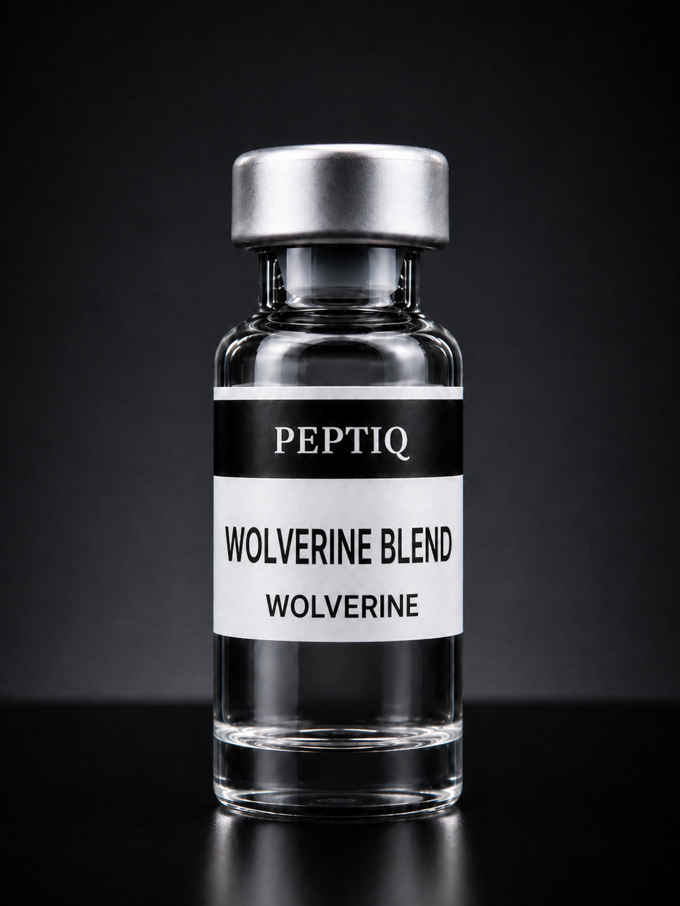
01 · RECOVERY
Wolverine
BPC-157 + TB-500
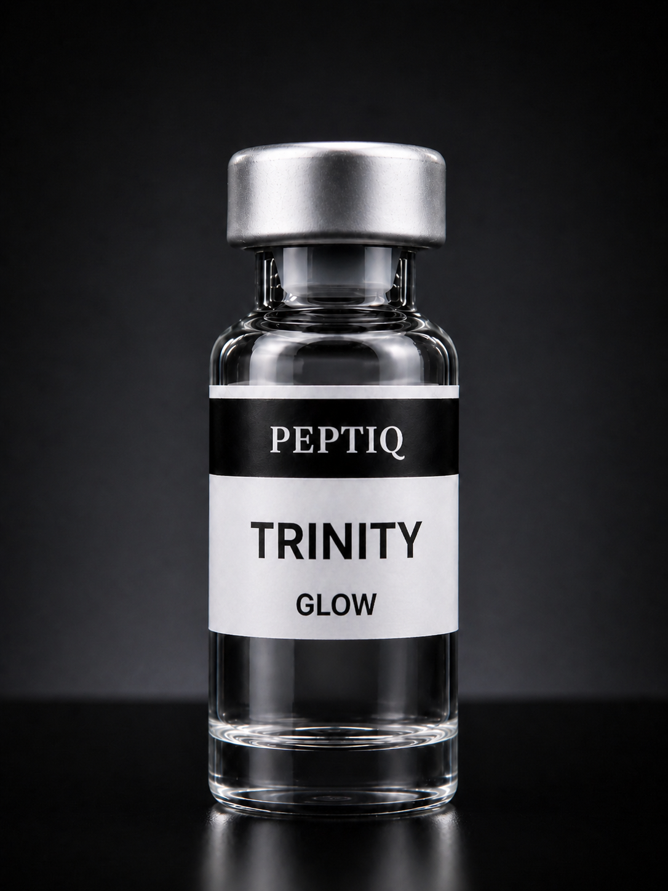
02 · GLOW
GLOW Trinity
BPC + GHK-Cu + TB
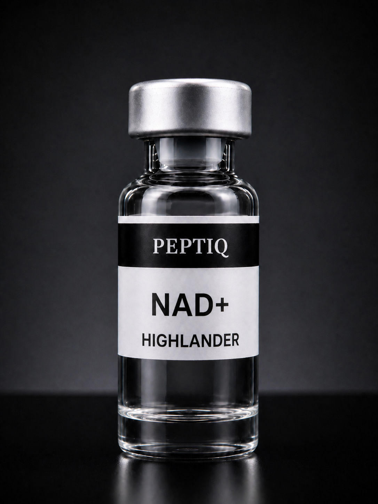
03 · LONGEVIDAD
Highlander
NAD+ + Epithalon
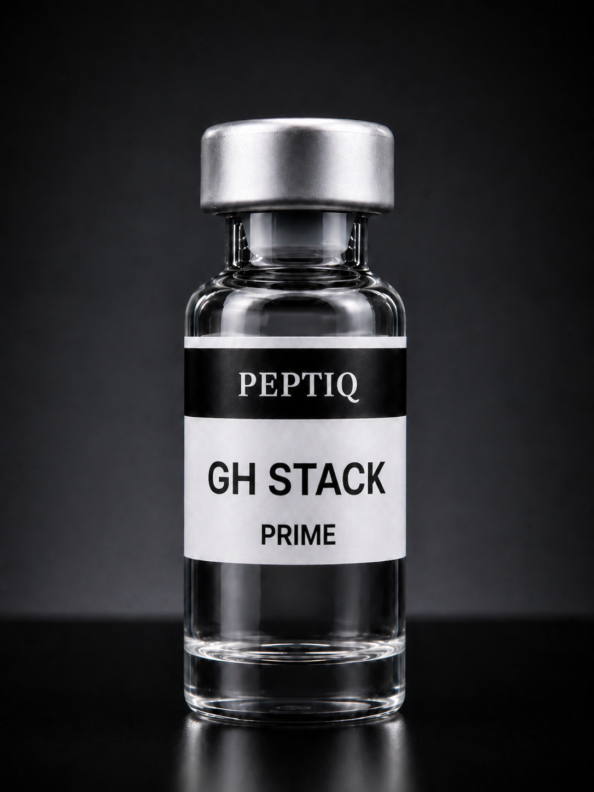
04 · PERFORMANCE
Prime Titan
Tesa + CJC + Ipa
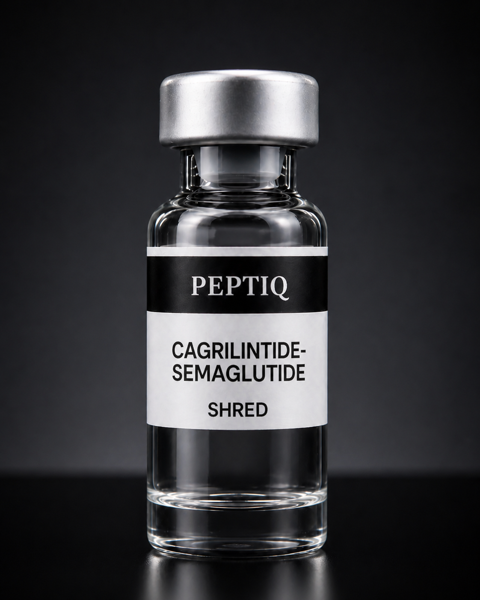
05 · COMPOSICIÓN
Shred
Reta · Sema · CagriSema
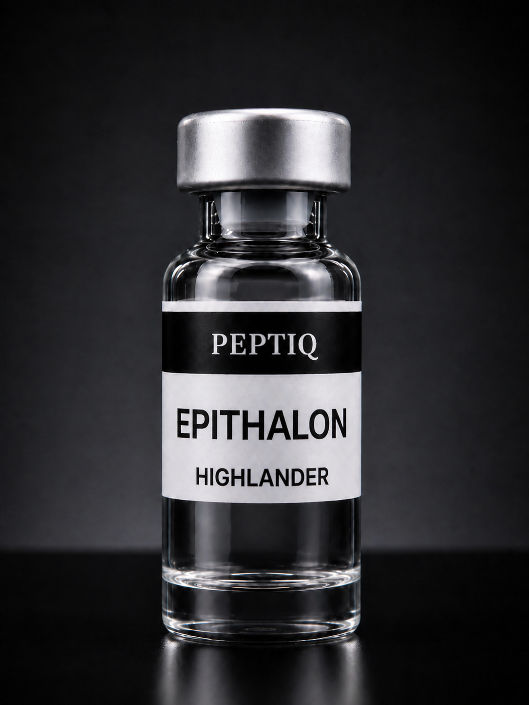
06 · SUEÑO
Sleep Reset
Ipamorelin + Epithalon
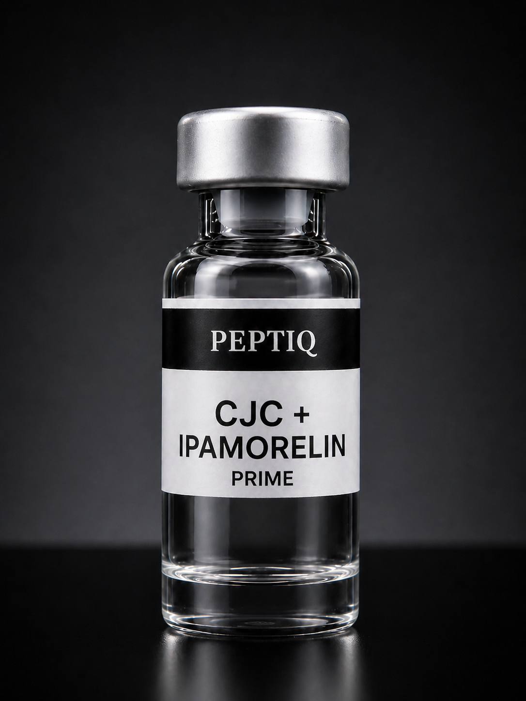
07 · VITALIDAD
Vitality
PT-141 + Kisspeptin
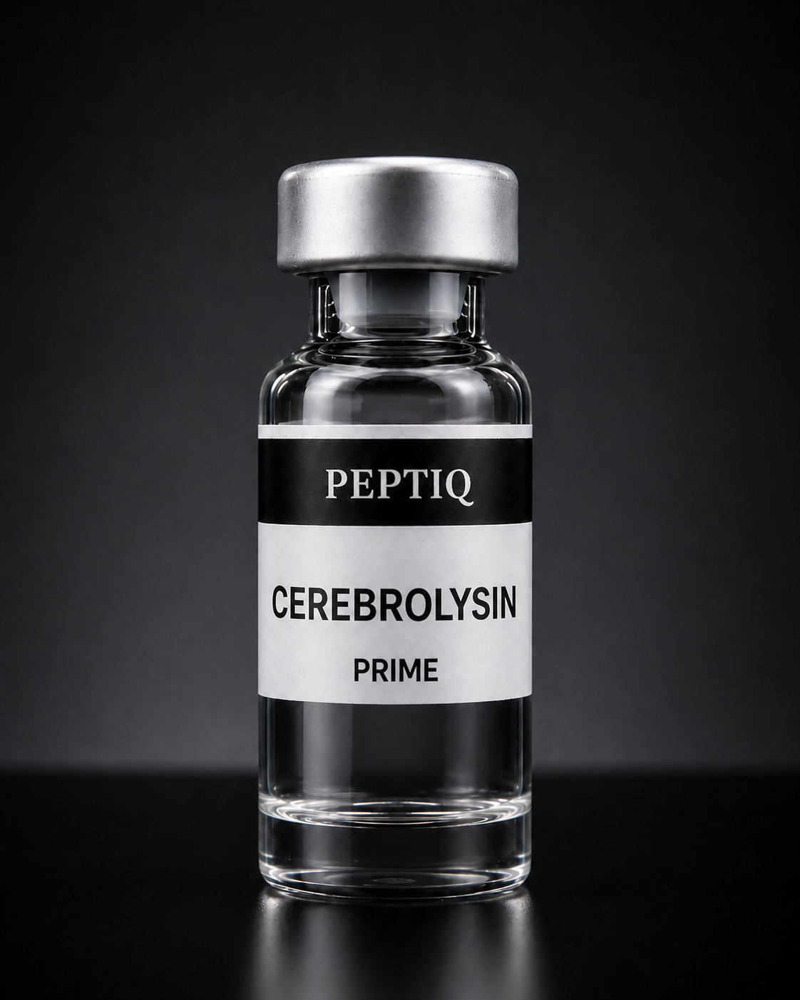
08 · COGNICIÓN
Neuro
Semax + Cerebrolysin

09 · VISCERAL
Visceral Cut
Tesamorelin mono
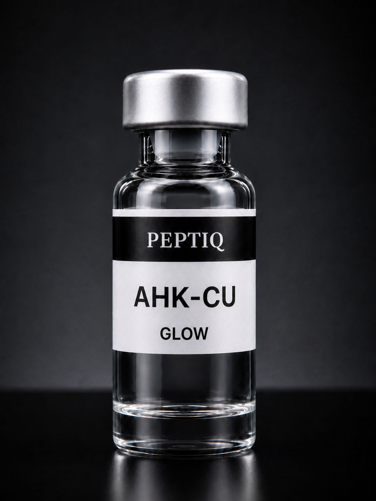
10 · CABELLO
GLOW Cabello
AHK-Cu folicular
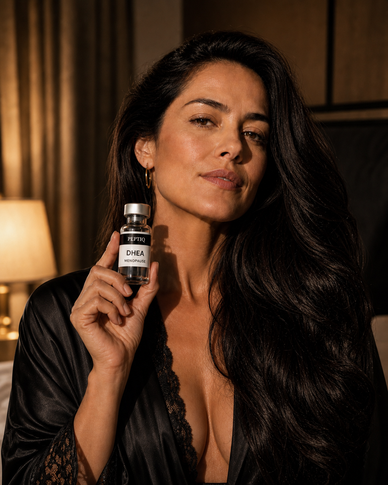
11 · MENOPAUSIA
Menopause Reset
Kiss + GHK-Cu + Ipa
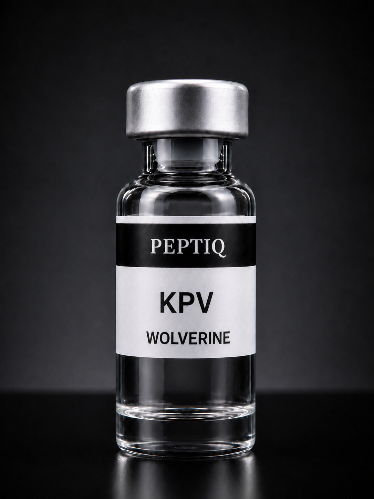
12 · INTESTINO
Gut Reset
BPC-157 + KPV
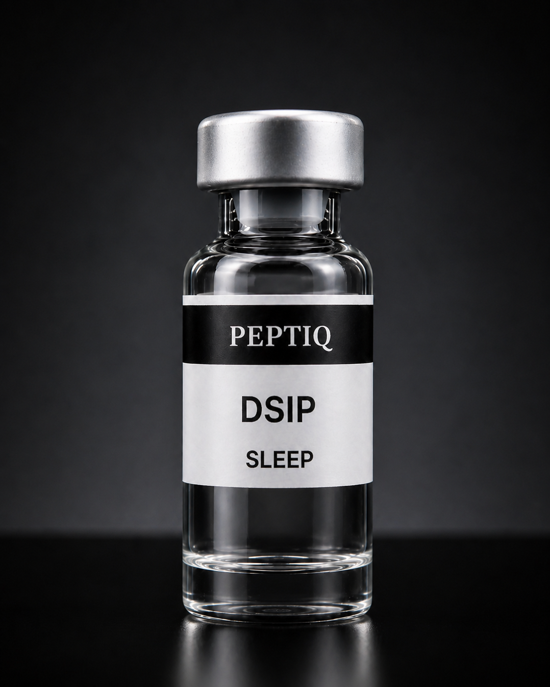
13 · NEURO+
DSIP
Sueño delta · pulsado
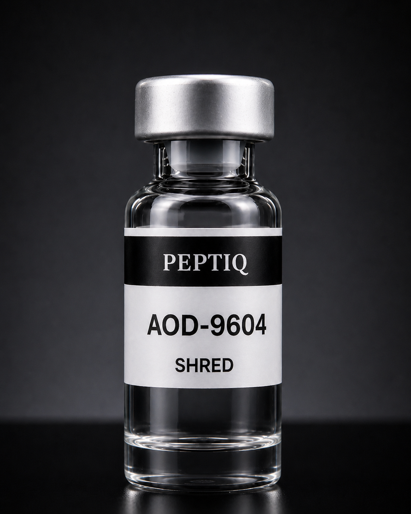
14 · METABÓLICO
AOD-9604
Lipólisis · fragmento GH
01 · WOLVERINE · HEAL STACK
PÁG 07
RECOVERY · TENDÓN · LIGAMENTO
Wolverine BPC-157 + TB-500 · 20mg blend
Protocolo de referencia para lesión de tejido blando. BPC-157 (15 aa, citoprotector gástrico) regula al alza VEGFR2 e induce angiogénesis local; TB-500 / Thymosin β-4 (43 aa) moviliza citoesqueleto de actina. Sinergia documentada: TB-500 trae la cuadrilla, BPC-157 le da el suministro vascular.
Vía SCDosis 250 µg BPC + 500 µg TBCiclo 6 sem
Usos reportados en literatura
- Tendinopatía de Aquiles, rotuliana, epicondilitis
- Esguinces grado I y II · post-cirugía ortopédica
- Úlcera gástrica · enfermedad inflamatoria intestinal
- Fascitis plantar crónica · túnel carpiano
- Reparación post-rotura muscular
Stack típico
Wolverine + colágeno hidrolizado oral 10–15 g/día + vitamina C 1–2 g/día (cofactor de prolil hidroxilasa). En lesiones articulares, BPC-157 administrado cerca del sitio según Chang 2011 supera a la administración distal.
Protocolo sugerido
| Péptido | Dosis | Frec. | Vía | Ciclo |
|---|
| BPC-157 | 250–500 µg/d | 1–2×/d | SC | 4–8 sem |
| TB-500 | 2–5 mg/sem | 2–3×/sem | SC | 4–6 sem |
| Wolverine BB20 | 250+500 µg | 1×/d | SC | 6 sem |
Seguridad
Perfil favorable en preclínica (hasta 500 µg/kg sin toxicidad). Embarazo, lactancia, pediátricos: contraindicación absoluta. Cáncer activo o reciente: evitar péptidos angiogénicos hasta consulta oncológica.
Fuentes: Chang CH et al. J Appl Physiol 2011 (21293447) · Seiwerth S et al. Curr Pharm Des 2018 (29345571) · Goldstein AL et al. Ann NY Acad Sci 2012 (22882274) · Sikiric P et al. J Physiol Paris 2014 (25173697) · Huang T et al. Curr Pharm Des 2019 (30864498).
02 · GLOW TRINITY · PIEL · 8 SEMANAS
PÁG 08
⭐ GLOW · REGENERACIÓN CUTÁNEA
GLOW Trinity BPC-157 + GHK-Cu + TB-500 · 70mg
Protocolo estético de referencia adoptado por clínicas dermatológicas premium. Combina inflamación sistémica reducida (BPC-157), inducción de colágeno tipo I y III (GHK-Cu) y migración de células madre dérmicas (TB-500). Ciclo estándar: ocho semanas, fotos día 0 · 28 · 56.
Vía SC nocturnaDosis 2–3 mg/díaCiclo 8 sem on / 4 off
GHK-Cu · el mecanismo
Tripéptido endógeno de cobre (Gly-His-Lys-Cu²⁺) presente en plasma humano. En piel, baja 60–70% entre los 20 y 60 (Pickart & Margolina (Cosmetics 2008–2015)). Se une al receptor DDR2 y activa TGF-β1 en fibroblastos dérmicos. Es master regulator que modula la expresión de 4,192 genes de reparación dérmica (Hong, Pickart, Margolina Cosmetics 2015) — cantidad sin paralelo en biología cosmética. Induce síntesis de colágeno I/III, elastina y proteoglicanos. En ensayos cutáneos de 12 semanas: reducción de hasta 70% en profundidad de arrugas.
Por qué el stack Trinity funciona
BPC-157 reduce inflamación de base (TNF-α, IL-6) — sin esto, el colágeno nuevo se fragmenta apenas se sintetiza. GHK-Cu es el motor anabólico: matriz, elastina, proteoglicanos. TB-500 moviliza células madre dérmicas a zonas a reparar.
Protocolo sugerido
| Péptido | Dosis | Frec. | Vía | Ciclo |
|---|
| Trinity GLOW70 | 2–3 mg/d | Diaria | SC abd | 8 sem |
| GHK-Cu topical | 1% serum | 2×/d | Cara/cuello | Indef. |
| AHK-Cu | 0.5–1 mg | 3×/sem | SC mesoter. | 12 sem |
Stack típico
Trinity inyectable + GHK-Cu topical 2×/día + protector solar mineral FPS 50 (no negociable: UV degrada todo colágeno nuevo) + retinol 0.3% nocturno + sueño 7+ h.
Seguridad
Perfil robusto. Eritema transitorio raro (24–48 h). Evitar en enfermedad de Wilson. No combinar con vitamina C en la misma aplicación: cobre y ascorbato compiten redox.
Fuentes: Pickart L, Margolina A. Biomed Res Int 2018 (29854759) · Pyo HK et al. Biol Pharm Bull 2007 (17202654) · Pickart L. J Biomater Sci 2008 (18534080) · Gruchlik A et al. Acta Pol Pharm 2014 (24779203).
03 · HIGHLANDER · LONGEVITY PACK
PÁG 09
LONGEVIDAD · MITOCONDRIA · TELÓMEROS
Highlander NAD+ + Epithalon + GHK-Cu
Stack fundacional del programa de longevidad. NAD+ restaura la moneda energética celular — el cuerpo pierde ~50% entre los 20 y 60 años en músculo esquelético (Verdin 2015). Epithalon protege el extremo del cromosoma; en modelos murinos, extiende vida media (Anisimov & Khavinson 2010).
Vía SC AMNAD+ 50–100 mg/dCiclo 10 ON / 20 OFF
NAD+ · qué hace
Nicotinamida adenina dinucleótido — la molécula que conecta tu dieta con la energía celular. Cada ATP requiere NAD+ como aceptor de electrones. Sustrato obligatorio de sirtuinas (SIRT1–7) y PARP, enzimas que regulan reparación de ADN, expresión génica y metabolismo. Caída de ~50% entre los 20 y 60 años en músculo esquelético humano (Verdin Science 2015), correlacionando con fatiga, resistencia a insulina, recuperación lenta y deterioro cognitivo subclínico.
Reponer NAD+ por SC o IM evita pérdida hepática de primer paso. Stack avanzado: NAD+ + inhibidores de CD38 (apigenina, quercetina, fisetina). CD38 es la ectoenzima glucohidrolasa que devora NAD+ celular bajo "inflammaging"; cerrar ese drenaje y recargar simultáneamente es el protocolo Sinclair de preservación biológica.
Epithalon · qué hace
Tetrámero sintético (Ala-Glu-Asp-Gly) descubierto por Khavinson en San Petersburgo. Khavinson 2003: induce actividad de telomerasa en fibroblastos humanos, extendiendo longitud telomérica y vida replicativa. Anisimov & Khavinson 2010 reportaron extensión de vida media en murinos — uno de los pocos compuestos con datos de longevidad en mamíferos.
| Péptido | Dosis | Vía | Ciclo |
|---|
| NAD+ NJ1000 | 50–100 mg/d | SC/IM | 10 ON / 20 OFF |
| Epithalon ET50 | 5–10 mg/d | SC | 10 d · 2×/año |
| GHK-Cu CU100 | 1–2 mg/d | SC abd | 30 d |
Tip clínico — la primera dosis de NAD+
La inyección SC de NAD+ a dosis completa (100 mg) es incómoda los primeros 5–10 minutos: calor, opresión torácica leve, urgencia urinaria. Es transitoria y autolimitada, no es alergia. Estrategia: 25 mg día 1, escalar a 50, luego a 100, administrar lentamente (60 segundos, no 5).
Fuentes: Rajman L, Chwalek K, Sinclair DA. Cell Metab 2018 (29514064) · Verdin E. Science 2015 (26785480) · Khavinson VK et al. Bull Exp Biol Med 2003 (14523535) · Anisimov VN, Khavinson VK. Biogerontology 2010 (19802582).
04 · PRIME TITAN · PERFORMANCE & GH
PÁG 10
⭐ PERFORMANCE · COMPOSICIÓN EJECUTIVA
Prime Titan Tesamorelin + CJC-1295 + Ipamorelin
No inyectamos hormona de crecimiento sintética. Le pedimos a tu hipófisis que libere más de la tuya. CJC-1295 sin DAC actúa como análogo GHRH (acelerador) que estimula a la pituitaria a pulsar GH; Ipamorelin es agonista selectivo del receptor de grelina GHSR1a (amplificador del pulso) sin afectar cortisol/prolactina. Sinergia obligatoria. Tesamorelin es el único secretagogo GHRH aprobado FDA (Egrifta) — actúa específicamente sobre grasa visceral (−15% en 26 semanas, Falutz NEJM 2007). El GH se libera durante sueño profundo · aplicar 2h post-cena en ayuno = sincronizar con pulso natural.
Tesa 1–2 mg AM ayunoCJC+Ipa 100+200 µg PMCiclo 12–16 sem
Pulsátil, no sostenido
Tu hipófisis libera GH en pulsos discretos durante sueño profundo (fases 3 y 4). La rHGH satura el receptor 24 h y dispara mecanismos compensatorios — al discontinuar, produces menos GH endógena. Los secretagogos como CJC-1295 e Ipamorelin amplifican el pulso natural sin destruir el patrón circadiano. Al discontinuar, regresas a baseline sin caída adicional.
Tesamorelin · el específico
Único GHRH aprobado FDA (lipodistrofia HIV, Falutz NEJM 2007). Reduce grasa visceral específicamente — el tejido que rodea órganos abdominales y predice riesgo cardiometabólico. No es para pérdida de peso global; es para recomposición.
Protocolo sugerido
| Péptido | Dosis | Frec. | Timing |
|---|
| CJC + Ipa CP10 | 100+200 µg | 5n/sem | 30 min pre-sueño |
| Tesamorelin TSM10 | 1–2 mg | Diaria | AM ayuno |
| Ipamorelin solo | 200–300 µg | 5n/sem | Pre-sueño |
Regla de oro · ayuno
No comer azúcares ni carbohidratos densos en las 2 h previas y posteriores a la inyección. La insulina elevada bloquea la liberación de GH inducida. Es el punto único más importante del protocolo y el que se ignora en el 80% de ciclos fallidos.
Seguridad
Retención de líquidos transitoria, hormigueo en manos, somnolencia post-dosis (deseable: pulso GH activo). Vigilar glucosa en ayunas y HbA1c: GH eleva ligeramente la glucemia. Contraindicado en cáncer activo, embarazo, lactancia, retinopatía diabética. No combinar con rHGH.
Fuentes: Teichman SL et al. JCEM 2006 (16352683) · Raun K et al. Eur J Endocrinol 1998 (9849822) · Falutz J et al. NEJM 2007 (18032763) · Stanley TL et al. JAMA 2014 (24449315).
05 · SHRED · COMPOSICIÓN AGRESIVA
PÁG 11
⭐ PÉRDIDA DE PESO · TRIPLE AGONISTA
Shred Retatrutide · Semaglutide · CagriSema
La generación nueva de análogos de incretinas. Semaglutide actúa sobre GLP-1 (-15% peso · STEP-1); Tirzepatide dual GLP-1/GIP (-22% · -30% hígado graso · SURPASS); CagriSema combina GLP-1 + análogo de amilina; Retatrutide es el primer agonista triple GLP-1/GIP/Glucagón con activación AMPK directa. Pérdidas reportadas: hasta 28.7% del peso corporal total en 68 semanas con Retatrutide (fase 3 Eli Lilly 2023) y -80% reducción de grasa hepática · el más potente disponible research-grade.
Vía SC semanalTitulación escaladaCiclo 24–48 sem
Mecanismo
Semaglutide: análogo GLP-1, retrasa vaciamiento gástrico, modula saciedad hipotalámica, mejora secreción insulina. STEP-1: 15% pérdida (Wilding 2021). CagriSema añade análogo de amilina — saciedad por vía distinta, mejor adherencia (Frias Lancet 2023). Retatrutide agonista triple — el glucagón aumenta gasto energético basal, distinguiéndolo de los anteriores.
Diferencias prácticas
- Semaglutide · efecto en apetito · sólido, predecible
- CagriSema · saciedad combinada · mejor adherencia
- Retatrutide · eleva gasto energético · curva más empinada
Protocolo sugerido
| Compuesto | Dosis inicial | Titulación |
|---|
| Semaglutide | 0.25 mg/sem | Doblar c/4 sem → 2.4 mg |
| CagriSema | 0.25 mg/sem | Hasta 2.4/2.4 mg |
| Retatrutide | 2 mg/sem | Hasta 8–12 mg/sem |
Stack típico
Análogo + proteína 1.8–2.2 g/kg/día + entrenamiento de fuerza 3–4×/sem + B12, D, magnesio + hidratación 35 ml/kg. La pérdida muscular es el riesgo principal de cualquier protocolo agresivo.
Seguridad — crítica
Náusea, estreñimiento, reflujo (titulación rápida). Pancreatitis rara pero seria — vigilar dolor abdominal alto persistente. Contraindicado en historia personal/familiar de carcinoma medular de tiroides, MEN-2, enfermedad biliar activa, embarazo, lactancia. Riesgo regulatorio MX: Retatrutide sin aprobación COFEPRIS — uso fuera de investigación bajo riesgo del usuario.
Fuentes: Wilding JPH et al. NEJM 2021 (33567185) · Jastreboff AM et al. NEJM 2023 (37354531) · Frias JP et al. Lancet 2023 · Garvey WT et al. Nat Med 2022.
06–07 · SLEEP RESET & VITALITY
PÁG 12
06 · SUEÑO · ARQUITECTURA REM/DELTA
Sleep Reset Ipamorelin nocturno + Epithalon
Ipamorelin 30 min pre-sueño amplifica el pulso nocturno de GH endógena, profundizando fases 3 y 4. Epithalon regula pineal y secreción de melatonina (Khavinson). Útil en sueño fragmentado, despertares múltiples, sensación de "no haber descansado" pese a 7+ h en cama, jet-lag persistente.
Ipa 200–300 µg pre-sueñoEpi 5 mg PM · 10 dDSIP 100–200 µg opcional
07 · VITALIDAD · EJE HPG
Vitality PT-141 + Kisspeptin
PT-141 (Bremelanotide) actúa centralmente sobre receptores MC3R/MC4R — efecto sobre deseo sexual, no mecánica vascular. Aprobado FDA (Vyleesi). Kisspeptin es el activador upstream de neuronas GnRH del hipotálamo: el regulador maestro del eje HPG. Skorupskaite & George han reportado uso en hipogonadismo funcional y amenorrea hipotalámica.
PT-141 1.0–1.75 mg PRNKiss-10 50–100 µg/kgFrec. 2–3×/sem
| Línea | Péptido | Dosis | Vía | Frecuencia | Notas |
|---|
| 06 Sleep | Ipamorelin | 200–300 µg | SC | 5 noches/sem | 30 min pre-sueño |
| 06 Sleep | Epithalon | 5 mg | SC | Diaria · 10 d | Tarde · 2×/año |
| 07 Vitality | PT-141 | 1.0–1.75 mg | SC | PRN, máx 8/mes | 45 min pre-actividad |
| 07 Vitality | Kisspeptin-10 | 50–100 µg/kg | SC | 2–3×/sem | Pulsátil, ciclos 4 sem |
Seguridad
Ipamorelin: perfil muy favorable, vigilar glucosa en uso prolongado. PT-141: hiperpigmentación transitoria leve, náusea (resolución 30 min), eritema facial; cuidado en hipertensión no controlada. Kisspeptin: bien tolerado. Embarazo y lactancia: contraindicación absoluta.
Fuentes: Raun K et al. Eur J Endocrinol 1998 (9849822) · Khavinson VK et al. Mech Ageing Dev 2003 · Pfaus JG et al. Pharmacol Biochem Behav 2007 · Skorupskaite K et al. Hum Reprod Update 2014 (24664881) · Kingsberg SA et al. Obstet Gynecol 2019.
08–09 · NEURO & VISCERAL CUT
PÁG 13
08 · COGNICIÓN · BDNF · PLASTICIDAD
Neuro Semax intranasal + Cerebrolysin
Dos neuropéptidos clásicos de la escuela rusa. Semax es fragmento de ACTH(4–10) modificado, intranasal, eleva BDNF y NGF en hipocampo y corteza prefrontal. Cerebrolysin es hidrolizado de neuropéptidos porcinos con datos en ictus y deterioro cognitivo. Vía intranasal aprovecha bulbo olfatorio — ruta directa al SNC, evita BHE.
Semax 1% 2–4 gotas/fosaCerebro 5–10 ml IMSelank 250–500 µg ansiolítico
09 · GRASA VISCERAL · EJECUTIVO
Visceral Cut Tesamorelin · monoterapia
No toda la grasa es igual. La visceral — la que rodea hígado, páncreas, intestino — es metabólicamente activa, inflamatoria, predictor independiente de enfermedad cardiometabólica. Tesamorelin es el único secretagogo GHRH con datos fase III específicamente sobre reducción de grasa visceral: −15% en 26 sem, sin cambio en masa magra (Falutz NEJM 2007).
Dosis 1–2 mgVía SC AM ayunoCiclo 16–26 sem
| Línea | Péptido | Dosis | Vía | Frecuencia | Ciclo |
|---|
| 08 Neuro | Semax 1% | 200–400 µg/fosa | Intranasal | 2–3×/d | 10–14 d |
| 08 Neuro | Cerebrolysin | 5–10 ml | IM | Diaria | 10–20 d |
| 08 Neuro | Selank | 250–500 µg | Intranasal | 2×/d | 10–14 d |
| 09 Visceral | Tesamorelin | 1–2 mg | SC | Diaria | 16–26 sem |
Tracking · Visceral Cut
Perímetro abdominal mensual; idealmente DEXA o resonancia con cuantificación de tejido adiposo visceral basal y a las 16 semanas. Sin medición objetiva, no hay ciclo evaluable. Cerebrolysin en epilepsia o riesgo convulsivo: precaución.
Fuentes: Ashmarin IP et al. Neurochem Res 2005 · Heiss WD et al. Stroke 2012 · Plosker GL, Gauthier S. CNS Drugs 2009 · Falutz J et al. NEJM 2007 (18032763) · Stanley TL et al. Lancet HIV 2019.
10–12 · GLOW CABELLO · MENOPAUSE · GUT
PÁG 14
10 · CABELLO · FOLÍCULO PILOSO
GLOW Cabello AHK-Cu · sin rebote
Tripéptido de cobre específico para folículo piloso (Ala-His-Lys-Cu²⁺). Estimula proliferación de células de la papila dérmica y prolonga fase anágena. Alternativa a minoxidil sin shedding rebote: AHK-Cu no sincroniza el ciclo, prolonga anágena por VEGF y proteoglicanos. Funciona si el folículo aún existe (no en Norwood VI–VII).
SC scalp 0.5–1 mg · 3×/semMesoterapia 1–2 mg c/2 semTopical 0.01–0.05%
11 · MENOPAUSIA · EJE HPG FEMENINO
Menopause Reset Kisspeptin + GHK-Cu + Ipamorelin
Soporte para perimenopausia y menopausia que actúa sobre tres ejes: regulación HPG (kisspeptin), restauración de matriz cutánea (GHK-Cu, ~30% pérdida de colágeno en primeros 5 años), soporte de sueño y composición (Ipamorelin). No reemplaza TRT — la complementa, o ofrece vía alternativa de mantenimiento estructural en pacientes no candidatas.
Kiss-10 50 µg/kg · 2×/semGHK-Cu 2 mg/d · 30 dIpa 200 µg pre-sueño
12 · INTESTINO · IBD · PERMEABILIDAD
Gut Reset BPC-157 entérico + KPV
BPC-157 fue descubierto como factor citoprotector gástrico, derivado de jugo gástrico humano. KPV es el fragmento C-terminal de α-MSH, antiinflamatorio potente con afinidad selectiva por mucosas. BPC-157 entérico restaura tight junctions (claudina, ocludina). KPV inhibe NF-κB; reduce TNF-α, IL-1β, IL-6 sin inmunosupresión sistémica. Stack de referencia para EII en preclínica.
BPC oral 500 µg · 2×/dKPV oral 200–400 µg · 1–3×/dCiclo 8–12 sem
Coordinación clínica · Menopause
Pensado para uso en clínica bajo supervisión ginecológica. Integración con TRT, tamizaje oncológico, densitometría ósea y perfil cardiometabólico anual es indispensable. PEPTIQ ofrece el material como referencia para conversación con especialista, no como sustituto de evaluación clínica.
Fuentes: Pyo HK et al. Biol Pharm Bull 2007 (17202654) · Trüeb RM. Int J Trichology 2009 · Skorupskaite K et al. Hum Reprod Update 2014 · Pickart L, Margolina A. Biomed Res Int 2018 · Sikiric P et al. J Physiol Paris 2014 · Kannengiesser K et al. Inflamm Bowel Dis 2008 (18200517) · Luger TA, Brzoska T. Ann NY Acad Sci 2007.
VI · CÓMO ELEGIR TU PROTOCOLO
Tu objetivo,
tu línea.
Esta matriz mapea los doce objetivos más frecuentes en consulta hacia la línea PEPTIQ correspondiente. Es punto de partida; un protocolo final se individualiza considerando edad, perfil hormonal, historia oncológica, medicación crónica y objetivos a 6–12 meses.
| Objetivo principal | Línea | Componentes | Ciclo típico | Ticket aprox. |
|---|
| Lesión deportiva · tendón · ligamento | Wolverine | BPC-157 + TB-500 | 6–8 sem | $5,499 |
| Piel · arrugas · firmeza | GLOW Trinity | Trinity blend + GHK-Cu topical | 8 sem | $7,999 |
| Energía · longevidad sistémica | Highlander | NAD+ + Epithalon + GHK-Cu | 30 d intermitente | $14,999 |
| Composición corporal · masa magra | Prime Titan | Tesamorelin + CJC + Ipa | 16 sem | $14,999 |
| Pérdida de peso significativa | Shred | Retatrutide o Semaglutide | 24–48 sem | $12,999+ |
| Sueño fragmentado · fatiga matinal | Sleep Reset | Ipamorelin + Epithalon | 8 sem | $5,499 |
| Libido · vitalidad sexual | Vitality | PT-141 + Kisspeptin | PRN + ciclos | variable |
| Foco · cognición · post-conmoción | Neuro | Semax + Cerebrolysin | 10–14 d | $8,999 |
| Grasa visceral aislada | Visceral Cut | Tesamorelin monoterapia | 16–26 sem | $7,999/mes |
| Caída de cabello androgenética temprana | GLOW Cabello | AHK-Cu mesoterapia | 12–20 sem | $3,299/mes |
| Perimenopausia · sueño · piel · libido | Menopause Reset | Kiss + GHK-Cu + Ipa | 3 meses | consultar |
| Crohn · CU · intestino permeable | Gut Reset | BPC-157 entérico + KPV | 8–12 sem | $5,999 |
01 · MARCADOR
¿Qué vas a medir?
Sin marcador, no hay protocolo serio. Define qué medir y cuándo: dolor 0–10, fotos día 0/28/56, hsCRP, edad biológica, perímetro abdominal. Sin tracking objetivo, indistinguible de placebo bien empacado.
02 · FISIOLOGÍA BASAL
¿Estás listo?
Los péptidos amplifican señales endógenas. Antes de cualquier ciclo: panel hormonal (T total/libre, E2, TSH, T4, IGF-1, cortisol), HbA1c, HOMA-IR, hsCRP, vitamina D, ferritina, B12. Línea base indispensable.
03 · CONTRAINDICACIÓN
¿Tienes alguna?
Cáncer activo o reciente contraindica angiogénicos (BPC, TB, GHK, GH-secretagogos). Embarazo y lactancia: absolutas. Diabetes no controlada, retinopatía, enfermedad biliar: precaución específica. Anticoagulación: caso a caso.
VII · RECONSTITUCIÓN & CONSERVACIÓN
PÁG 16
Capítulo VII · Operación
Reconstitución & cálculo
de dosis.
Los péptidos llegan en polvo liofilizado para máxima estabilidad. Antes de cada ciclo, se reconstituyen con agua bacteriostática. Siguiendo el protocolo correcto, la solución es estable ~28 días refrigerada a 2–8 °C.
Protocolo paso a paso
- Lava manos. Desinfecta el septum del vial liofilizado y del agua bacteriostática con isopropílico al 70%. Espera 30 segundos a que evapore.
- Carga la jeringa con agua bacteriostática. Volumen típico: 2 mL por vial de 10 mg (resultante: 5 mg/mL = 5000 µg/mL).
- Inyecta el agua escurriéndola por la pared interna del vial, no directamente sobre el polvo. Previene espuma y agregación.
- Deja reposar 60 segundos. No agites. Rota suavemente entre las palmas hasta disolución completa (1–3 min).
- Etiqueta con fecha en marcador permanente sobre la tapa. Refrigera a 2–8 °C (no congelador, no puerta).
- Carga cada dosis con jeringa U-100 estéril nueva. Nunca recargues una jeringa usada.
Cálculo · ejemplo BPC-157
Vial: 10 mg liofilizado.
Reconstitución: 2 mL agua bacteriostática.
Concentración: 10 mg ÷ 2 mL = 5000 µg/mL.
Jeringa U-100: 100 u = 1 mL → 1 u = 0.01 mL = 50 µg.
Dosis 250 µg = 250 ÷ 50 = 5 unidades.
Dosis 500 µg = 10 unidades.
Calculadora online
peptiqmx.com/calculadora · introduce dosis del vial, agua de reconstitución y dosis objetivo. Devuelve unidades exactas en jeringa U-100.
Errores frecuentes
- Agitar violentamente · rompe estructura terciaria. Solo rotar.
- Agua destilada simple · sin alcohol bencílico al 0.9% no hay conservador; contaminación en 48–72 h.
- Congelar la solución · cristalización fragmenta el enlace, irreversible.
- Vial a temperatura ambiente >1 h · acelera degradación.
- Mezclar dos péptidos en la misma jeringa · incompatibilidades químicas.
- Reutilizar agua bacteriostática · vial 3 mL → máx 10 punciones.
Vías por péptido
| Compuesto | Vía estándar |
|---|
| BPC-157, TB-500, CJC, Ipa, Tesa, Reta | SC abdomen |
| GHK-Cu, AHK-Cu | SC + topical |
| NAD+ | SC o IM lenta |
| Semax, Selank | Intranasal |
| Cerebrolysin | IM |
| BPC-157, KPV (Gut Reset) | Oral entérico |
VIII · VERIFICACIÓN DE LOTE & PROGRAMA B2B
PÁG 17
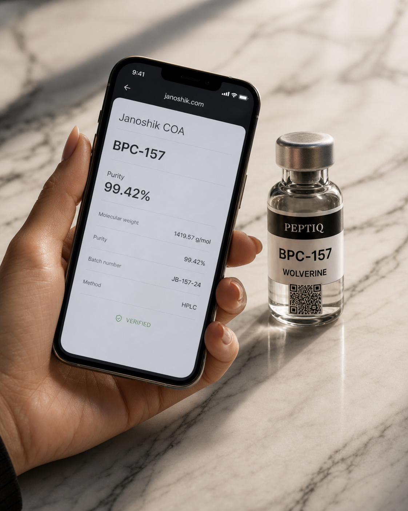
Cada caja · NFC integrado bajo el sello holográfico
Capítulo VIII
Verificación
de lote.
Cada caja PEPTIQ incluye un chip NFC bajo el sello holográfico que abre directamente el COA público del lote. Sin app intermediaria, sin registro.
- Acerca el teléfono al sello. iPhone XS+ o Android moderno con NFC habilitado.
- Verifica número de lote · debe coincidir con caja y vial.
- Lee el cromatograma HPLC · pico único limpio >99% (individuales) o >97% (blends).
- Verifica fecha de análisis · COA emitido en los últimos 12–18 meses.
- Cruza con espectrometría de masas · peso molecular ±0.5 Da del teórico.
Si recibes un lote cuyo COA no carga, no coincide o cuya pureza es inferior al umbral: peptiqmx.com/garantia-coa reembolsa el lote completo sin discusión.
IX · PROGRAMA B2B · CLÍNICAS PARTNER
Para clínicas de medicina estética, longevidad, hormonal y deportiva.
Margen partnerPricing mayoreo con descuentos 15–35% según volumen mensual. Margen final clínica 40–60% sobre tarifa concierge. Factura con IVA, plazos a 30 días.
Soporte clínicoMaterial editorial de marca blanca. Llamadas de protocolo con tu equipo médico. Templates de consentimiento informado. Investigador dedicado por WhatsApp.
White-labelVolumen ≥ 200 viales/mes: línea con tu marca, COA Janoshik público bajo lote correspondiente. Empaque negro mate, holográfico, NFC integrado.
14 líneas activas · 99%+ pureza HPLC · 100% COA público · Entrega 24h CDMX/MTY/GDL · Onboarding en <7 días hábiles · peptiqmx.com/b2b-clinicas
X · CÓMO ORDENAR · CONCIERGE
Pureza que no
se declara.
Se verifica.
Esta guía documenta los protocolos que usan nuestras clínicas partner y nuestros sujetos de investigación. Escríbenos por WhatsApp y te mandamos el COA Janoshik del lote vigente — antes, no después, de tu compra.
WHATSAPP
+52 1 444 577 0445
EMAIL
contacto@peptiqmx.com
VERIFICA TU LOTE
peptiqmx.com/verify
CLÍNICAS B2B
peptiqmx.com/b2b-clinicas
FORMAS DE PAGO · ENTREGA 24H CDMX · MTY · GDL
Tarjeta crédito/débito · 3, 6 y 9 MSI · Transferencia SPEI · Bitcoin (−10% off) · OXXO · Stripe checkout · Factura con IVA 100% deducible disponible
Aviso regulatorio · Research Use Only · Los productos PEPTIQ MX son péptidos de investigación científica (research-grade compounds) destinados exclusivamente a uso profesional en laboratorios, investigación académica y estudios clínicos autorizados. No están aprobados por COFEPRIS ni FDA para uso humano. No deben ser administrados ni consumidos por personas. La documentación describe dosis, frecuencias y protocolos reportados en literatura peer-reviewed con fines exclusivamente informativos. El uso es responsabilidad única y exclusiva del adquirente. PEPTIQ MX no asume responsabilidad por aplicaciones fuera del contexto de investigación. Cada lote es analizado por Janoshik Analytical · Brno, República Checa · ISO/IEC 17025:2017; COA público en peptiqmx.com. Lector declara ser mayor de edad (18+) y actuar bajo su propia responsabilidad. Se recomienda consultar con profesional de la salud certificado antes de cualquier protocolo. PEPTIQ MX · Edición 2026 · Volumen I.